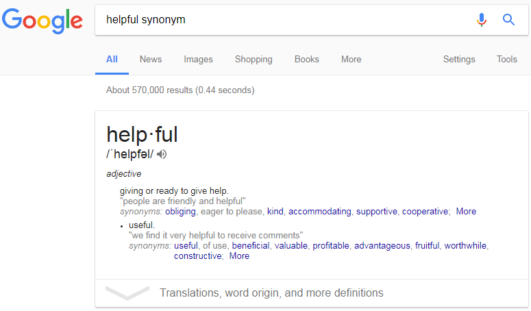
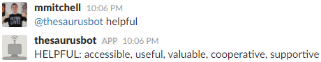

SlackBot Thesaurus
Summary
Tool for staff writers of PopWrapped to allow synonym searches in the work Slack chat and reduce open tabs.
Tools Used

Python, pip, virtualenv, Slack API, slackclient, PyDictionary
When writing articles for a news website, I would have many tabs open for research and often had to open additional tabs to search for synonyms to avoid repeating descriptive words. In Chrome, opening extra tabs clogs up your RAM and slows your computer down. This was particularly annoying on my old laptop.
Since the writing staff already have a tab open to Slack for work chat, I created a bot user to allow writers to perform this search in the same tab.
My next steps for this project is to add more functionality. I would like to add other useful abilities, such as querying for definitions.